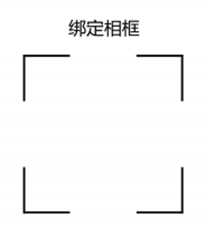
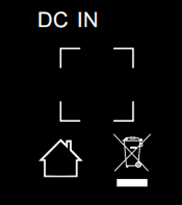

视 . AI智能相框使用指南
快速上手，开启数字陪伴之旅
简体中文
English
日本語
한국어
1
连接电源与 Wi-Fi
将视 . AI 智能相框接通电源，等待设备启动。根据开机向导提示，选择家中的 Wi-Fi 网络并输入密码，完成联网。
小贴士：建议将相框放在 Wi-Fi 信号较好的位置，以获得更稳定的内容同步、语音互动和使用体验。
2
下载微圈 App
使用手机扫描包装底部的微圈 App 二维码，进入下载页面；也可以在应用商店搜索"微圈"下载安装。

支持平台：iOS 12.0 及以上 / Android 8.0 及以上。
3
绑定相框
打开微圈 App，注册或登录账号后，点击"添加设备"。根据页面提示，扫描包装底部或相框背面插电口附近的设备绑定二维码，即可完成手机账号与相框的配对。


绑定成功后，您可以通过微圈 App 管理相框中的照片、视频、人物档案和相关设置。
送礼模式：如果您购买相框是为了送给家人或朋友，也可以在不拆开包装的情况下，直接扫描包装底部的设备绑定二维码，提前完成设备绑定、人物影像整理和祝福内容设置。收礼人收到相框并开机联网后，即可看到您准备的人物影像档案、惊喜照片和礼物祝福。
4
整理人物影像档案
在微圈 App 中选择人物档案，根据提示上传本人或已获授权的照片、视频素材。系统会按人物与时间整理内容，供相框展示和查阅。
最佳效果：建议上传清晰的正面照片，保持光线均匀、背景简洁，人物面部无遮挡。
5
开始浏览
设置完成后，人物照片、视频与相关故事会在相框中呈现。您可以通过触摸屏幕浏览，也可以在微圈 App 中继续调整人物、内容和播放设置。
如设备支持靠近亮屏功能，靠近相框时可自动唤醒屏幕，让日常互动更加自然便捷。
使用小贴士
- 首次使用建议连接充电器使用，确保充足电量
- 定期通过App更新设备固件，获取最新功能
- 避免将设备放置在阳光直射或高温环境
- 如遇问题可在App中联系客服或查看帮助中心